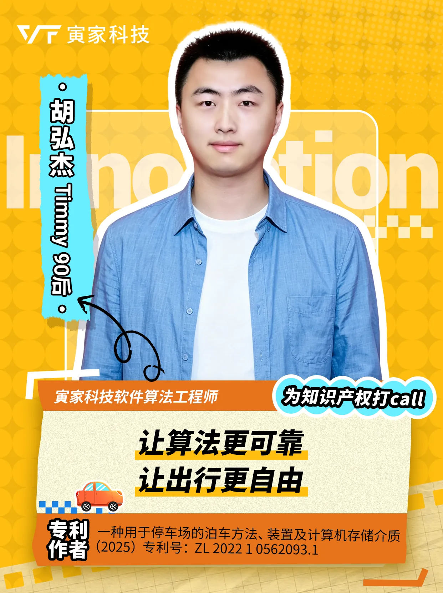
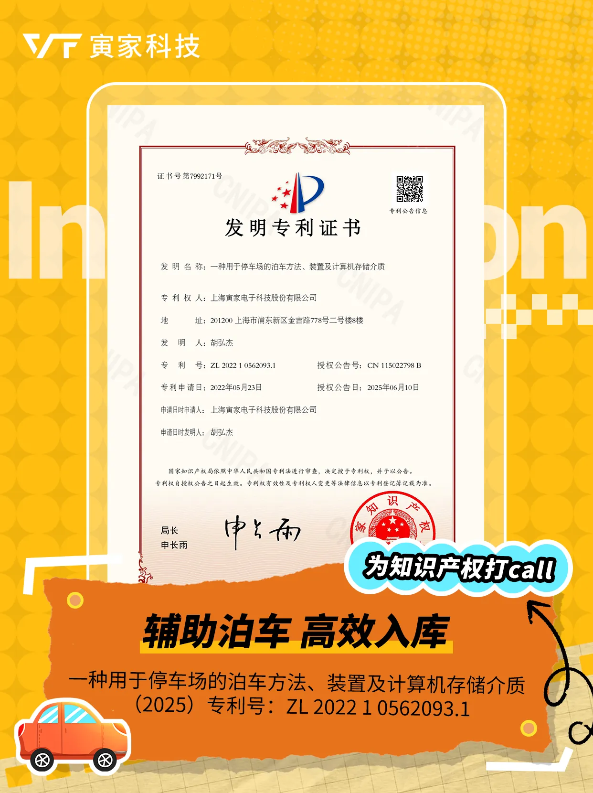
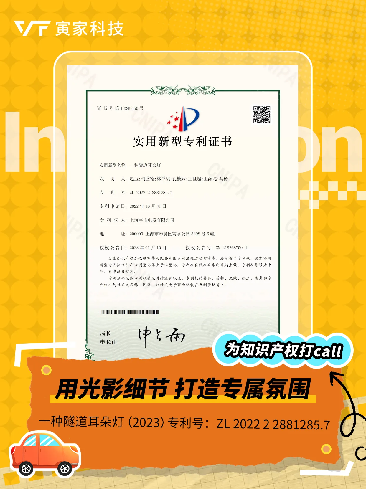
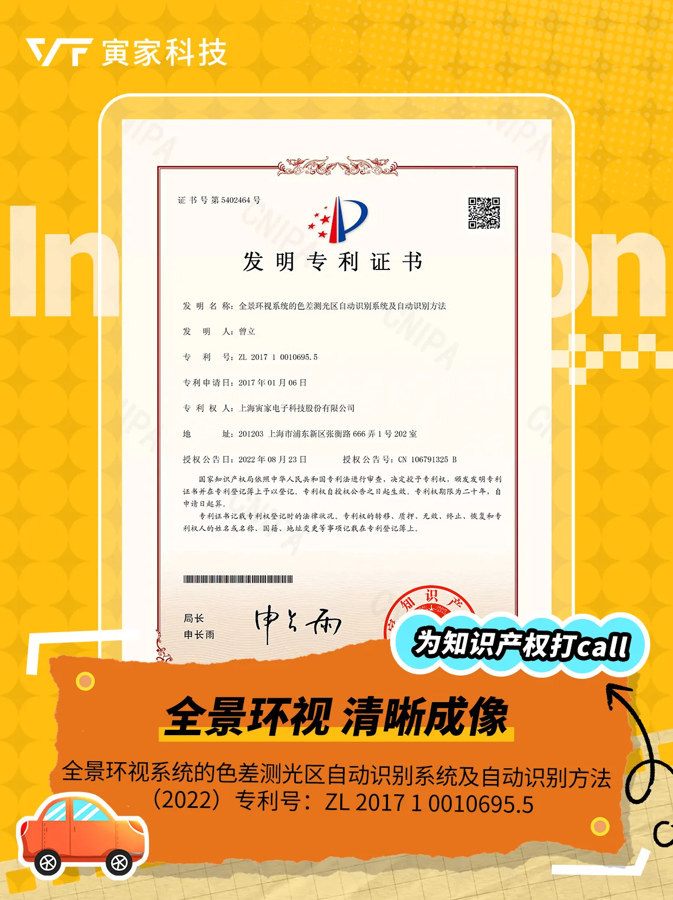
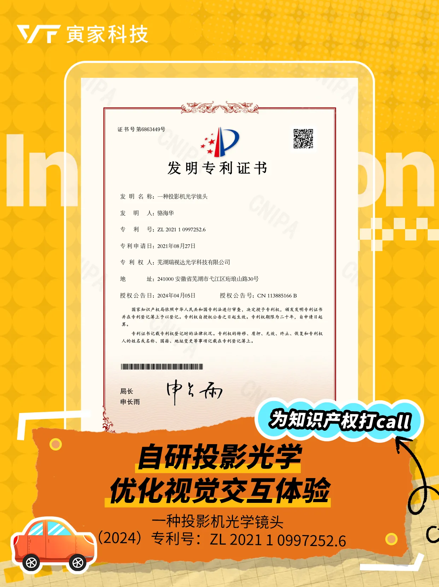
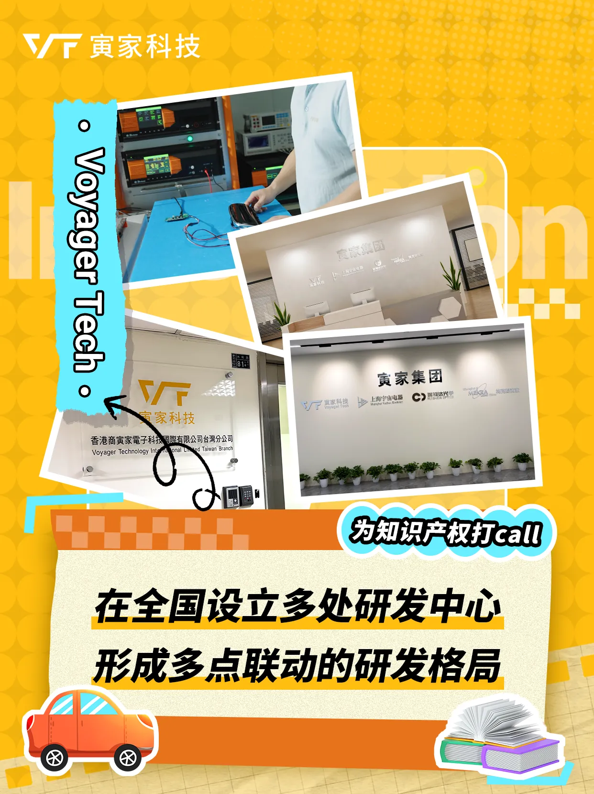
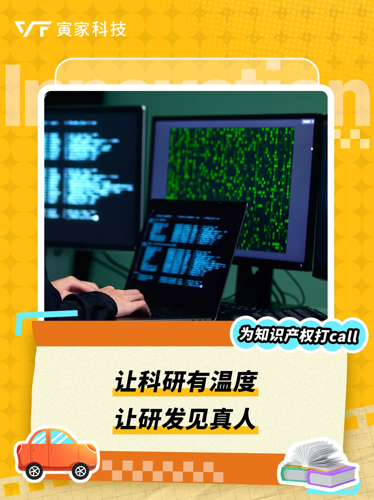
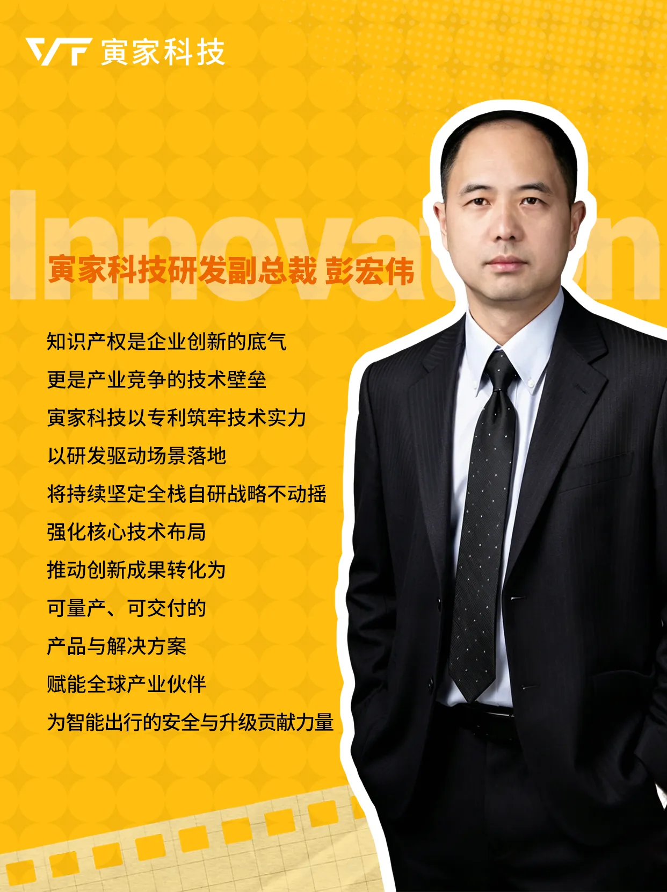

2026全國知識產權宣傳週，為原創打call！
4月26日是世界知識產權日，4月20日-26日是2026全國知識產權宣傳週。
今年宣傳週主題是：“加強新興領域知識產權保護、加快新質生產力發展”。
寅家科技以“讓智能科技豐富每一段旅程”為使命，深耕智能出行賽道，以知識產權護航技術創新，以核心自研助力新質生產力落地。
寅家集團在全國設立多處研發中心，形成多點聯動的研發格局，構建軟件算法、硬件、系統與測試的全棧自研矩陣，支撐智能輔助駕駛、智能座艙及智能感知的持續迭代。
不追求空洞的概念，只為解決真實的痛點，用長期主義，做有價值的研發。
致敬每一位守護創新、堅守原創的研發人！








